| term | estimate | std.error | statistic | p.value |
|---|---|---|---|---|
| (Intercept) | 60.041 | 2.056 | 29.207 | 0.000 |
| cell_phones_100 | 0.094 | 0.017 | 5.546 | 0.000 |
Lesson 7: SLR: Checking model assumptions
Nicky Wakim
2026-02-02
Learning Objectives
Describe the model assumptions made in linear regression using ordinary least squares
Determine if the relationship between our sampled X and Y is linear
Use QQ plots to determine if our fitted model holds the normality assumption
Use residual plots to determine if our fitted model holds the equality of variance assumption
Process of regression data analysis


Model Selection
Building a model
Selecting variables
Prediction vs interpretation
Comparing potential models
Model Fitting
Find best fit line
Using OLS in this class
Parameter estimation
Categorical covariates
Interactions
Model Evaluation
- Evaluation of model fit
- Testing model assumptions
- Residuals
- Transformations
- Influential points
- Multicollinearity
Model Use (Inference)
- Inference for coefficients
- Hypothesis testing for coefficients
- Inference for expected \(Y\) given \(X\)
- Prediction of new \(Y\) given \(X\)
Let’s remind ourselves of one model we have been working with
We have been looking at the association between life expectancy and cell phones
We used OLS to find the coefficient estimates of our best-fit line
Population model:
\[\begin{aligned} Y &= \beta_0 + \beta_1 \cdot X + \epsilon \\ \text{LE} &= \beta_0 + \beta_1 \text{CP} + \epsilon \end{aligned}\]Estimated model:
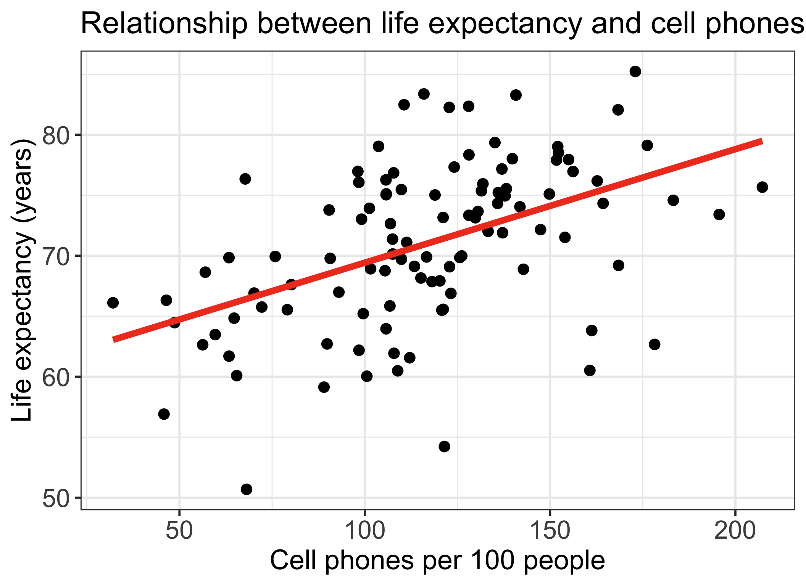
Our residuals will help us a lot in our diagnostics and assumptions!
The residuals \(\widehat\epsilon_i\) are the vertical distances between
- the observed data \((X_i, Y_i)\)
- the fitted values (regression line) \(\widehat{Y}_i = \widehat\beta_0 + \widehat\beta_1 X_i\)
\[ \widehat\epsilon_i =Y_i - \widehat{Y}_i \text{, for } i=1, 2, ..., n \]
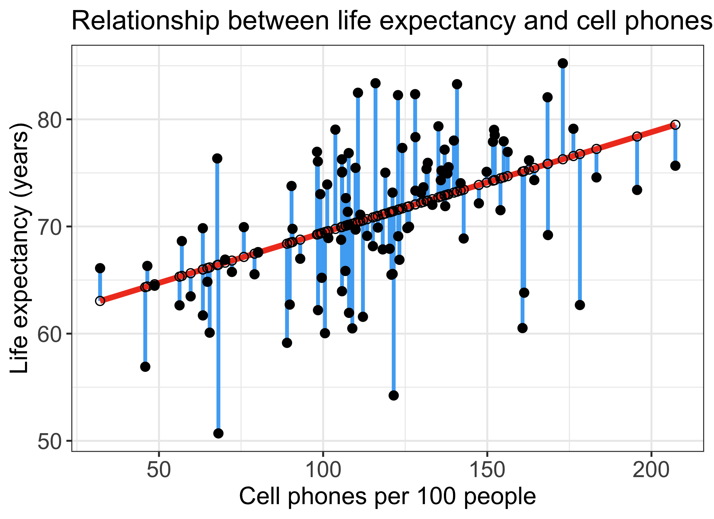
Learning Objectives
- Describe the model assumptions made in linear regression using ordinary least squares
Determine if the relationship between our sampled X and Y is linear
Use QQ plots to determine if our fitted model holds the normality assumption
Use residual plots to determine if our fitted model holds the equality of variance assumption
Least-squares model assumptions: LINE
These are the model assumptions made in ordinary least squares:
[L] Linearity of relationship between variables
[I] Independence of the \(Y\) values
[N] Normality of the \(Y\)’s given \(X\) (or residuals)
[E] Equality of variance of the residuals (homoscedasticity)
Note: These assumptions are baked into the population model. We look at the population parameters when we discuss these assumptions, but we use the estimated model with our data to check if the assumptions are held up.
L: Linearity
- The relationship between the variables is linear (a straight line):
- The mean value of \(Y\) given \(X\) (aka \(\widehat{Y}|X\), \(\mu_{y|x}\) or \(E[Y|X]\)) is a straight-line function of \(X\)
\[\widehat{Y}|X = \beta_0 + \beta_1 \cdot X\]
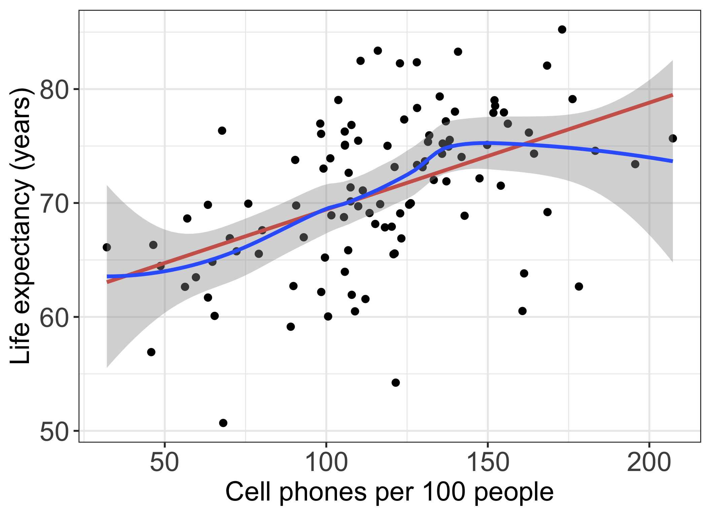
I: Independence of observations
The \(Y\)-values are statistically independent of one another
Examples of when they are not independent, include
repeated measures (such as baseline, 3 months, 6 months)
data from clusters, such as different hospitals or families
This condition is checked by reviewing the study design and not by inspecting the data
- How to analyze data using regression models when the \(Y\)-values are not independent is covered in BSTA 519 (Longitudinal data)
Poll Everywhere Question 1
N: Normality
- For any fixed value of \(X\), \(Y\) has normal distribution.
- Note: This is not about \(Y\) alone, but \(Y|X\)
- Equivalently, the measurement (random) errors \(\epsilon_i\) ’s normally distributed
- This is more often what we check
\[\epsilon \sim N(0, \sigma^2)\]

E: Equality of variance of the residuals
The variance of \(Y\) given \(X\) (\(\sigma_{Y|X}^2\)), is the same for any \(X\)
- We use just \(\sigma^2\) to denote the common variance
This is also called homoscedasticity
\[\epsilon \sim N(0, \sigma^2)\]

Summary of LINE model assumptions
- \(Y\) values are independent (check study design!)
The distribution of \(Y\) given \(X\) is
- normal
- with mean \(\mu_{y|x} = \beta_0 + \beta_1 \cdot X\)
- and common variance \(\sigma^2\)
This means that the residuals are
- normal
- with mean = 0
- and common variance \(\sigma^2\)
In mathematical form:
\(Y_i|X \overset{\text{i.i.d.}}{\sim} N(\beta_0 + \beta_1X, \sigma^2)\)
\(\epsilon_i \overset{\text{i.i.d.}}{\sim} N(0, \sigma^2)\)
where “iid” means independent and identically distributed
How do we determine if our model follows the LINE assumptions?
[L] Linearity of relationship between variables
Check if there is a linear relationship between the mean response (Y) and the explanatory variable (X)
[I] Independence of the \(Y\) values
Check that the observations are independent
[N] Normality of the \(Y\)’s given \(X\) (residuals)
Check that the responses (at each level X) are normally distributed
- Usually measured through the residuals
[E] Equality of variance of the residuals (homoscedasticity)
Check that the variance (or standard deviation) of the responses is equal for all levels of X
- Usually measured through the residuals
Learning Objectives
- Describe the model assumptions made in linear regression using ordinary least squares
- Determine if the relationship between our sampled X and Y is linear
Use QQ plots to determine if our fitted model holds the normality assumption
Use residual plots to determine if our fitted model holds the equality of variance assumption
L: Linearity of relationship between variables
Is the association between the variables linear?
- Diagnostic tool: Scatterplot of \(X\) vs. \(Y\)
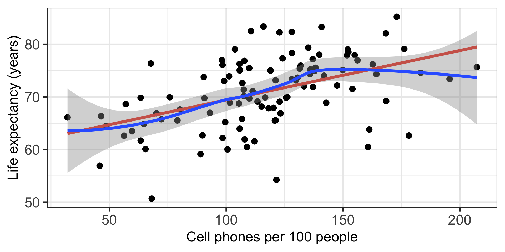
Poll Everywhere Question 2
I: Independence of the residuals (\(Y\) values)
- Are the data points independent of each other?
- Diagnostic tool: reviewing the study design and not by inspecting the data
Learning Objectives
Describe the model assumptions made in linear regression using ordinary least squares
Determine if the relationship between our sampled X and Y is linear
- Use QQ plots to determine if our fitted model holds the normality assumption
- Use residual plots to determine if our fitted model holds the equality of variance assumption
N: Normality of the residuals
- We need to check if the errors/residuals (\(\epsilon_i\)’s) are normally distributed
Diagnostic tools:
Distribution plots of residuals
QQ plots of residuals
N: Extract model’s residuals in R
- First extract the residuals’ values from the model output using the
augment()function from thebroompackage. - Get a tibble with the orginal data, as well as the residuals and some other important values.
Rows: 105
Columns: 8
$ life_exp <dbl> 62.64, 76.07, 73.41, 75.37, 73.66, 71.37, 63.96, 75.47…
$ cell_phones_100 <dbl> 56.2655, 98.3950, 195.6250, 131.4840, 130.5400, 107.50…
$ .fitted <dbl> 65.32037, 69.27372, 78.39761, 72.37873, 72.29015, 70.1…
$ .resid <dbl> -2.6803652, 6.7962791, -4.9876074, 2.9912674, 1.369850…
$ .hat <dbl> 0.038747119, 0.012168777, 0.059882210, 0.011325165, 0.…
$ .sigma <dbl> 5.987137, 5.954886, 5.971571, 5.985846, 5.991701, 5.99…
$ .cooksd <dbl> 4.234809e-03, 8.096656e-03, 2.369189e-02, 1.457236e-03…
$ .std.resid <dbl> -0.45838569, 1.14653081, -0.86249588, 0.50441083, 0.23…N: Check normality with distribution plots of residuals (1/2)
Note that below I save each figure as an object, and then combine them together in one row of output using grid.arrange() from the gridExtra package

N: Check normality with distribution plots of residuals (2/2)
- So do these plots of the residuals look normal?
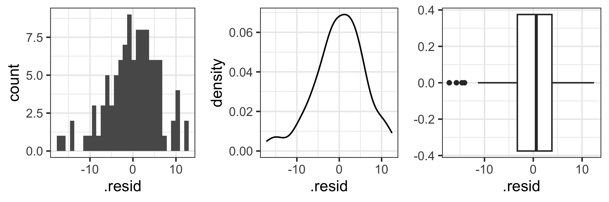
- My assessment: Looks like our residuals could be normal if we did not have those values around -20
N: Normal QQ plots (QQ = quantile-quantile)
- It can be tricky to eyeball with a histogram or density plot whether the residuals are normal or not
- QQ plots are often used to help with this
- Vertical axis: data quantiles
- data points are sorted in order and
- assigned quantiles based on how many data points there are
- Horizontal axis: theoretical quantiles
- mean and standard deviation (SD) calculated from the data points
- theoretical quantiles are calculated for each point, assuming the data are modeled by a normal distribution with the mean and SD of the data
- Data are approximately normal if points fall on a line.
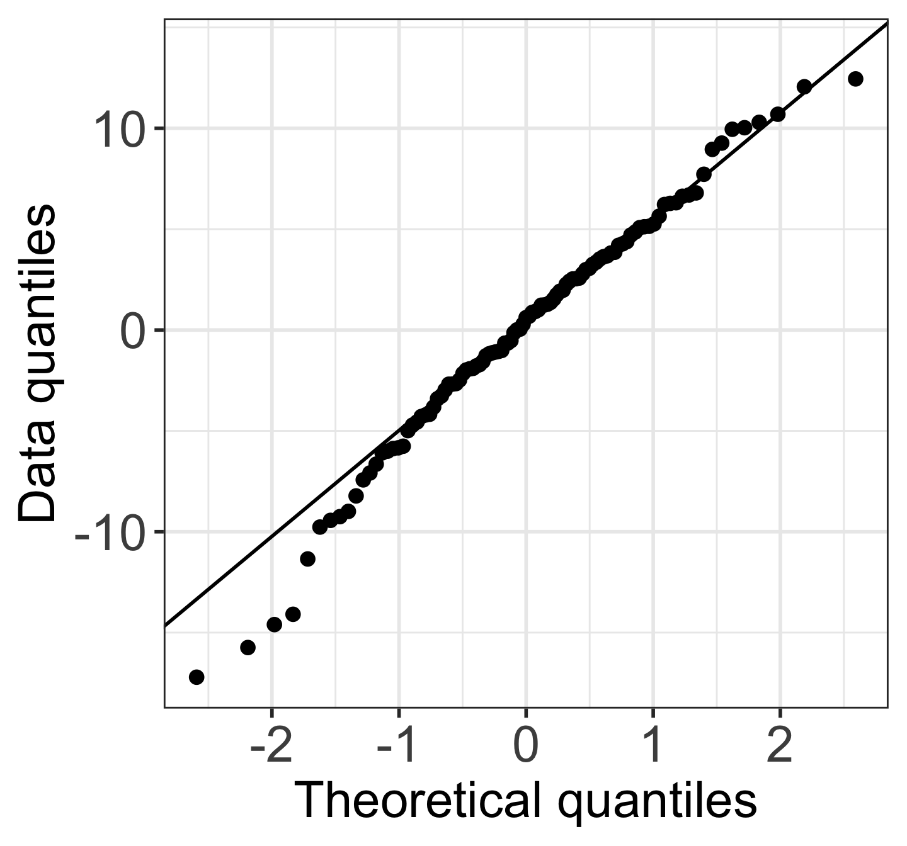
N: Examples of Normal QQ plots (from \(n=100\) observations)
Normal
Uniform
T
Skewed
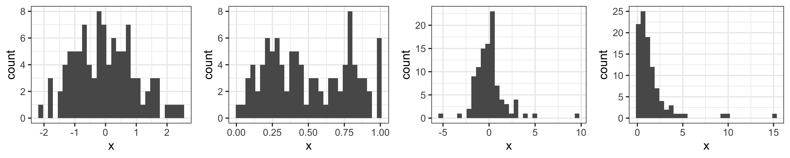
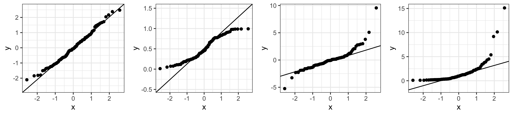
N: Examples of Normal QQ plots (from \(n=10\) observations)
Normal
Uniform
T
Skewed
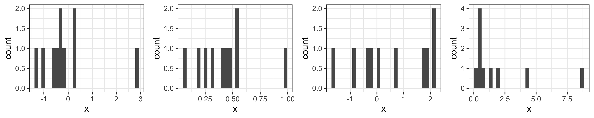
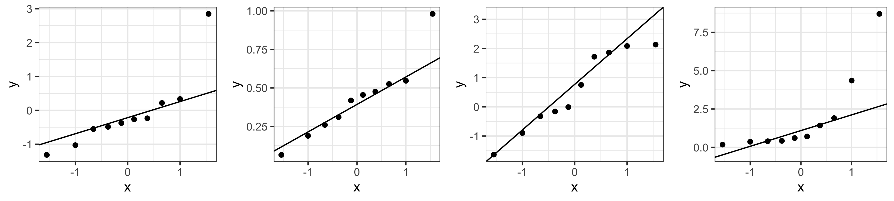
N: Examples of Normal QQ plots (from \(n=1000\) observations)
Normal
Uniform
T
Skewed
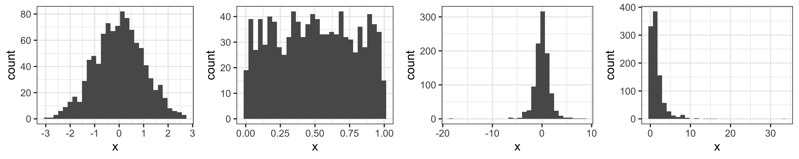
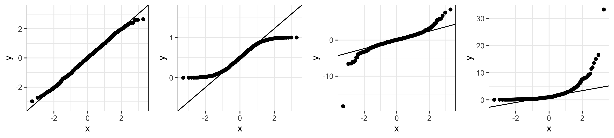
N: We can compare the QQ plots: model vs. theoretical
- QQ plot from life expectancy vs. cell phones regression
N: Shapiro-Wilk Test of Normality
Goodness-of-fit test for the normal distribution: Is there evidence that our residuals are from a normal distribution?
Honestly: I don’t use this test very often in practice
Hypothesis test:
\[\begin{aligned} H_0 & : \text{data are from a normally distributed population} \\ H_1 & : \text{data are NOT from a normally distributed population} \end{aligned}\]
Learning Objectives
Describe the model assumptions made in linear regression using ordinary least squares
Determine if the relationship between our sampled X and Y is linear
Use QQ plots to determine if our fitted model holds the normality assumption
- Use residual plots to determine if our fitted model holds the equality of variance assumption
E: Equality of variance of the residuals
- Homoscedasticity: How do we determine if the variance across X values is constant?
- Diagnostic tool: residual plot
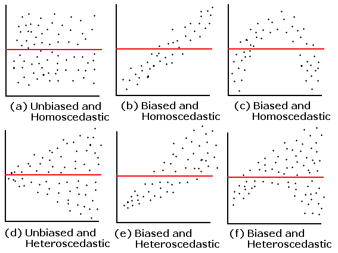
E: Creating a residual plot
- \(x\) = explanatory variable from regression model
- (or the fitted values for a multiple regression)
- \(y\) = residuals from regression model
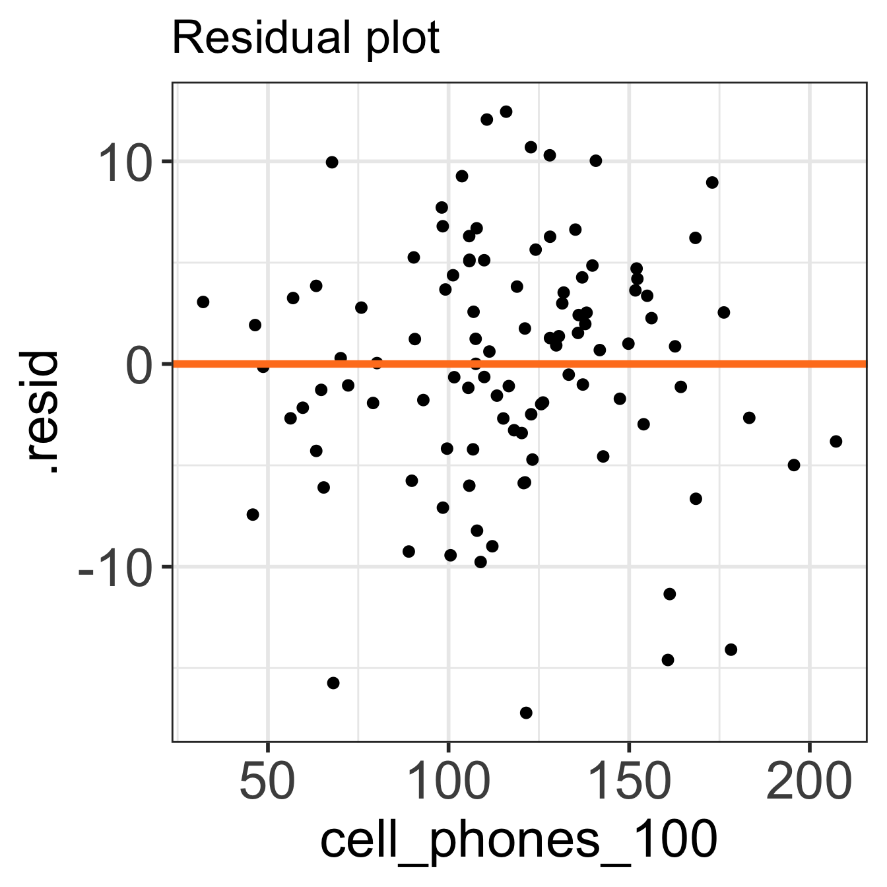
autoplot() can be a helpful tool
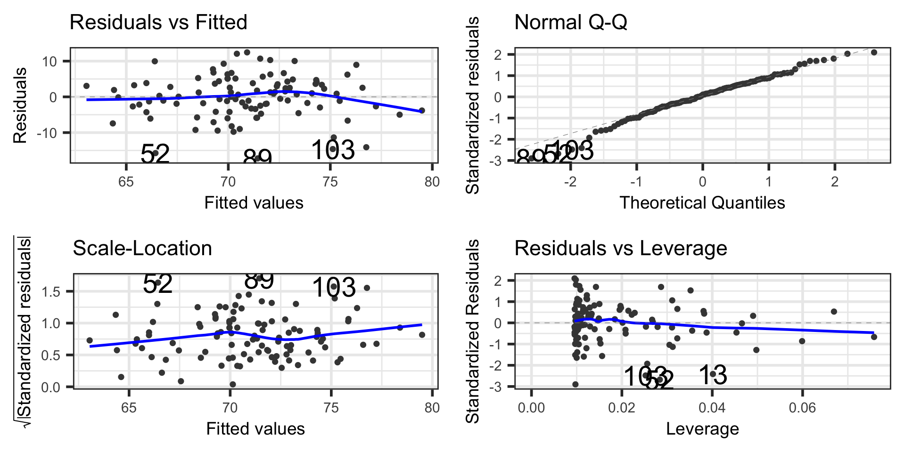
Summary of the assumptions and their diagnostic tool
| Assumption | What needs to hold? | Diagnostic tool |
|---|---|---|
Linearity \(\text{}\) |
|
\(\text{}\) |
Independence \(\text{}\) |
|
\(\text{}\) |
Normality \(\text{}\) |
|
|
Equality of variance \(\text{}\) |
|
\(\text{}\) |
We didn’t really go over our options when these assumptions do not hold
- We will consider this more once we get into multiple linear regression
- For now, with SLR, when assumptions do not hold, there are three next steps I can take:
- Add more variables to the model (SLR is not usually enough to explain an outcome)
- Check flagged countries (more in next lesson)
- See if we need to transform the response variable (more in a future lesson)
- Another note: I do not typically make these plots very presentable
- Axes were left with whatever names were given to them
- These plots are usually just for us!
- Not really something that you include in a formal report
Lesson 7: SLR 4